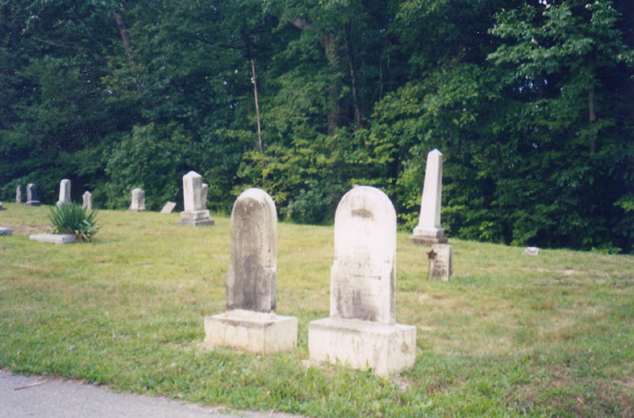

Ohio's large cities are spread across a tapestry of smaller towns which were annexed, assimilated, and absorbed over the decades. Before Columbus was big enough to blanket Franklin County from edge to edge, hundreds of villages thrived beyond the city limits. Some still retain their identity as neighborhoods, like Clintonville, Franklinton, and Linden. The location of others is marked by little more than a street name, while some are forgotten almost entirely.
Flint was a town that grew up around a station on the Cleveland, Columbus, Cincinnati & Indianapolis Railroad line in Sharon Township, northern Franklin County. It was originally known as Westerville Station, and sometimes as Wester V Station when abbreviated on a map. The original railroad depot, built in 1908, was named Westerville Station, but when the post office moved in later that year, the town needed a new name, and Flint was chosen, with A.J. Willughby as the first postmaster. The Old State Road, or Worthington-New Haven Road, had its southern terminus near Flint, which meant there was still plenty of overland shipping when farmers brought their produce and livestock to market in Columbus.
Today, Flint is gone and greater Columbus has taken over. The people who live on Flint Road built their extremely nice homes in Worthington, not Flint.
One of the old train station buildings, pictured above, still stands alongside the tracks. It's the most identifiable remaining piece of Flint for the simple reason that the name of the town is written across it. As you can see, it's spelled out in white block letters in the bricks of the street-facing wall. At one time those brick letters must have helped trainmen and their passengers know where they were, back when the distinction between Columbus, Ohio, and Flint, Ohio mattered. According to an e-mail I got, this building dates back only to the 1960s, and was at one time home to a store called Crowner's.
The small school building where Flint's children attended class is still standing, neatly boarded up, in a park at the corner of Park Street and Flint Road.

The former schoolyard has bright new playground equipment and a paved parking area. Most abandoned buildings are considered a nuisance, but this one seems almost decorative in the context of the park.
This is another of the more identifiable relics from the days when there was actually a small town here. The school is located not far from the railroad crossing and the former station; as you can see below, the plaque over the front door bears the same name as the wall of the train depot.
And then there's Flint Cemetery. Area folks have been laid to rest here for nearly 130 years. It's just north of the park on Flint Road, and is still in use and well-kept enough to have its own phone number.

I have a small section dedicated to Flint Cemetery; click here to check it out.
Actually, Flint was a pretty unremarkable town, but it's interesting to see the way the suburbs of a constantly-growing city like Columbus overtake a place like this. My then-girlfriend Katydid and I explored the park and the cemetery and the other remnants of the town in late 2002 through the summer of 2003; many of these photos were taken with her camera.
Flint Cemetery
Old State Road, Central Ohio
Back
Sources
Helwig, Richard M. Ohio Ghost Towns No. 53: Franklin County. Sunbury: Center for Ghost Town Research in Ohio, 1988.